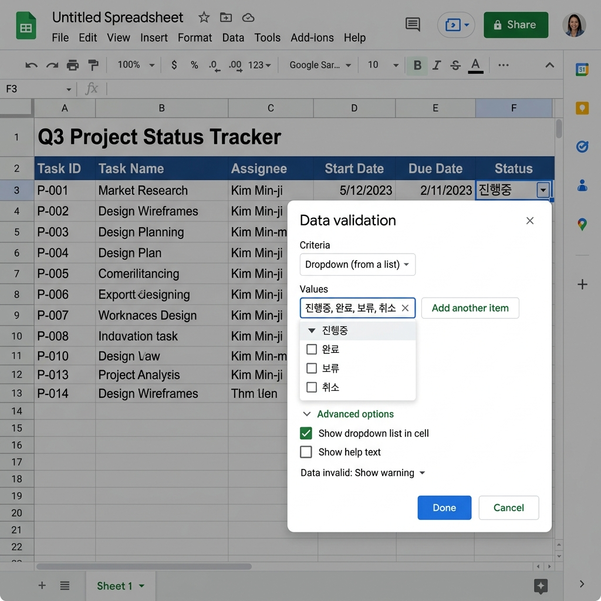
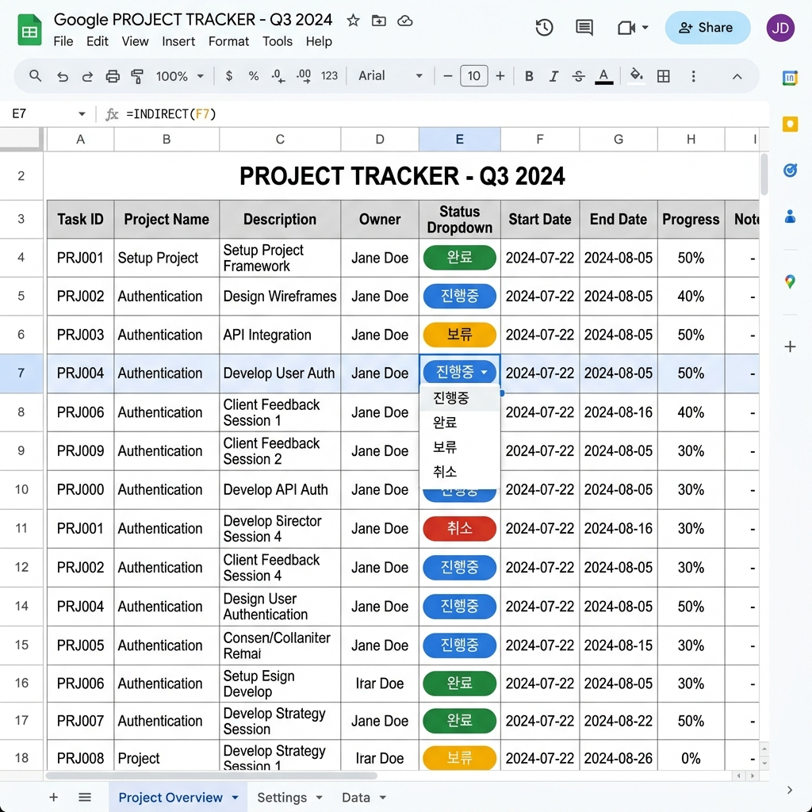
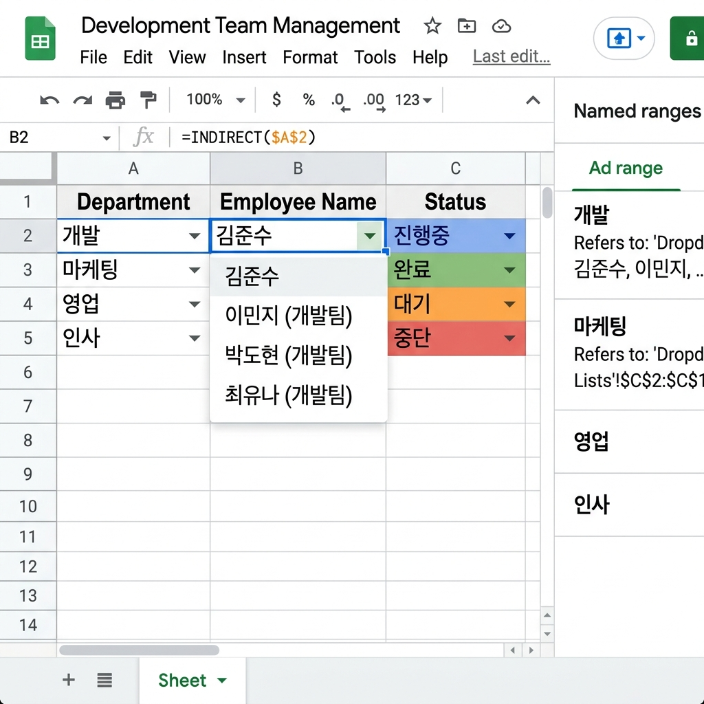

구글 스프레드시트 드롭다운 목록 완벽 가이드 2026 — 데이터 확인·동적 조건부 목록 자동화
입력 실수는 데이터 품질을 망치는 1번 원인입니다.
직접 타이핑 대신 드롭다운 목록(Data Validation)을 사용하면 입력 오류를 원천 차단하고 데이터 일관성을 보장할 수 있습니다. 팀 협업 스프레드시트에서는 필수 기능이라 해도 과언이 아닙니다.
이 가이드에서는 기본 드롭다운부터 시작하여 다른 셀의 값에 따라 목록이 자동으로 바뀌는 동적 조건부 연동 드롭다운, 그리고 자주 활용되는 색상 연동 조건부 서식까지 실무에 바로 적용 가능한 수준으로 설명합니다. 함수 문법은 Google 공식 문서 기준으로 작성하였습니다.
📌 데이터 확인(Data Validation) 기초 — 드롭다운의 원리
구글 스프레드시트의 데이터 확인(Data Validation) 기능은 특정 셀에 입력 가능한 값의 범위나 유형을 제한하는 기능입니다. 드롭다운 목록은 이 기능의 가장 대표적인 활용 사례로, 셀을 클릭하면 미리 정의한 값 목록이 펼쳐지고 그 중에서만 선택하도록 강제합니다.
데이터 확인이 필요한 대표 상황
- 팀원들이 동일한 스프레드시트에 상태값을 입력할 때 (예: '진행중', '완료', '보류')
- 부서명, 지역명처럼 정해진 목록 중 하나를 선택해야 할 때
- 숫자 범위나 날짜 범위를 제한할 때
- 이메일, URL 형식 검사가 필요할 때
드롭다운 적용 전과 후를 비교하면 그 효과가 명확합니다.
| 구분 | 드롭다운 적용 전 | 드롭다운 적용 후 |
|---|
| 입력 방식 | 자유 텍스트 입력 | 목록에서 선택 |
| 오류 발생 | 빈번 (오타, 공백 차이 등) | 원천 차단 |
| COUNTIF 정확도 | 낮음 (오타 미집계) | 100% |
| 협업 용이성 | 낮음 | 높음 |
🔧 기본 드롭다운 만들기 — 단계별 설명
방법 1 — 직접 목록 입력 방식
가장 빠르고 간단한 방법입니다.
① 드롭다운을 적용할 셀 선택
예: D2:D100 범위 선택
② 메뉴 → 데이터 → 데이터 확인 클릭
③ 기준 → "목록(항목)" 선택
항목 입력란에 쉼표로 구분하여 입력: 진행중,완료,보류,취소
④ 잘못된 데이터 → "경고 표시" 또는 "입력 거부" 선택
팀 협업 환경에서는 "입력 거부"를 권장합니다.
⑤ 저장 클릭
방법 2 — 셀 범위 참조 방식 (동적 유지 가능)
목록을 별도 시트에 관리하면 수정이 훨씬 편합니다.
① 별도 시트(예: '목록' 시트)의 A열에 항목 작성
A1: 진행중 / A2: 완료 / A3: 보류 / A4: 취소
② 데이터 확인 → 기준 → "범위의 목록" 선택
범위 입력: 목록!A1:A4
③ 이후 목록 시트에서 항목을 추가·수정하면 드롭다운도 자동 반영

구글 스프레드시트 데이터 확인 설정 화면 — 드롭다운 목록 구성 예시 / AI 제작 이미지
🔗 INDIRECT 함수를 활용한 동적 연동 드롭다운 (핵심 기법)
일반 드롭다운을 넘어 첫 번째 선택에 따라 두 번째 목록이 자동으로 바뀌는 연동 드롭다운이 실무에서 매우 유용합니다. 예를 들어 '카테고리' 셀에서 '과일'을 선택하면 '세부 항목' 셀에 '사과, 배, 포도'만, '채소'를 선택하면 '당근, 양파, 시금치'만 나타나게 하는 구조입니다.
구현 원리
핵심은 이름 지정 범위(Named Range)와 INDIRECT 함수의 조합입니다.
STEP 1 — 이름 지정 범위 만들기
'목록' 시트에 카테고리별 목록을 열별로 작성합니다.
목록 시트 구성 예:
A열: 과일 (헤더) B열: 채소 (헤더) C열: 음료 (헤더)
A2: 사과 B2: 당근 C2: 물
A3: 배 B3: 양파 C3: 주스
A4: 포도 B4: 시금치 C4: 우유
각 열을 선택 후 상단 메뉴 → 데이터 → 이름이 지정된 범위 → 이름 등록.
A2:A4를 선택하여 이름을 과일로, B2:B4를 채소로, C2:C4를 음료로 등록합니다.
⚠️ 중요: 이름 지정 범위의 이름은 첫 번째 드롭다운의 항목값과 완전히 일치해야 합니다. 공백, 대소문자 하나라도 다르면 INDIRECT가 작동하지 않습니다. 예를 들어 첫 번째 드롭다운의 값이 '과일'이면 이름 지정 범위도 반드시 '과일'이어야 합니다.
STEP 2 — 첫 번째 드롭다운 (카테고리 선택)
D2 셀에 데이터 확인 → 목록(항목) → 과일,채소,음료 입력.
STEP 3 — 두 번째 드롭다운 (세부 항목 — INDIRECT 활용)
E2 셀에 데이터 확인 → 범위의 목록 → 범위 입력란에 다음 수식 입력:
=INDIRECT(D2)
이제 D2에서 "과일"을 선택하면 E2의 드롭다운에 사과, 배, 포도가 나타나고, "채소"를 선택하면 당근, 양파, 시금치로 자동 전환됩니다.
🎨 드롭다운 + 조건부 서식 — 색상으로 상태 시각화
드롭다운과 조건부 서식을 결합하면 상태값에 따라 자동으로 배경색이 바뀌는 직관적인 대시보드를 만들 수 있습니다.
적용 방법
① 드롭다운이 있는 열(예: D2:D100) 선택
② 서식 → 조건부 서식 클릭
③ "다음인 경우 셀 서식 지정" → "텍스트 정확히 포함" 선택
④ 각 값에 대해 조건 추가:
- 값: 진행중 → 배경색: 파란색 계열 (예: #e3f2fd)
- 값: 완료 → 배경색: 초록색 계열 (예: #e8f5e9)
- 값: 보류 → 배경색: 노란색 계열 (예: #fff9c4)
- 값: 취소 → 배경색: 빨간색 계열 (예: #ffebee)
이렇게 하면 팀원이 드롭다운에서 값을 선택하는 순간 해당 행이 해당 색으로 즉시 변경되어 프로젝트 현황을 한눈에 파악할 수 있습니다.

드롭다운 + 조건부 서식 연동 — 상태값에 따른 자동 색상 구분 대시보드 / AI 제작 이미지
⚡ 동적 드롭다운 고급 기법 — FILTER 함수 활용
INDIRECT 방식의 한계는 이름 지정 범위를 미리 모두 만들어야 한다는 점입니다. 항목이 많고 유동적이라면 FILTER + UNIQUE 조합이 더 강력합니다.
시나리오: '직원 데이터' 시트에 부서(A열), 이름(B열)이 있을 때, 특정 셀에서 부서를 선택하면 해당 부서 직원 이름만 다른 드롭다운에 나타나게 하고 싶을 때.
중간 테이블 생성 (별도 시트에서)
=FILTER(직원데이터!B2:B100, 직원데이터!A2:A100=선택셀!A1)
위 수식을 임시 셀에 입력하면 선택된 부서의 직원 이름만 동적으로 추출됩니다. 이 결과 범위를 데이터 확인의 "범위의 목록"으로 지정하면 됩니다.
💡 실무 팁: FILTER 수식이 반환하는 배열은 범위가 고정되지 않아 데이터 확인의 직접 입력이 어렵습니다. 이 경우 Apps Script로 드롭다운을 동적 갱신하는 방법이 가장 유연하나, 수식만으로 처리하려면 INDIRECT와 이름 범위 조합이 현실적입니다.
📋 드롭다운 목록 관리 모범 사례
실무에서 드롭다운을 체계적으로 관리하는 팁을 공유합니다.
원칙 1 — 목록 전용 시트 분리
모든 드롭다운 목록은 '코드목록', '참조데이터' 등 별도 시트에서 중앙 관리합니다. 시트 이름이나 보호 설정을 통해 실수로 목록이 수정되는 것을 방지합니다.
원칙 2 — 목록 항목에 공백 제거 철저
항목 앞뒤에 숨어있는 공백은 COUNTIF, VLOOKUP 등 함수에서 불일치 오류를 유발합니다. 목록 입력 후 TRIM 함수로 검토합니다.
=TRIM(A2) /* 앞뒤 공백 및 중간 중복 공백 제거 */
원칙 3 — 목록 항목 수는 20개 이하 권장
드롭다운 목록이 너무 길면 사용자 경험이 나빠집니다. 항목이 20개를 초과한다면 계층 구조(연동 드롭다운)로 분리하거나 검색 가능한 방식을 검토하세요.
원칙 4 — 목록 변경 이력 관리
협업 시트에서 목록이 자주 바뀐다면, 목록 시트 옆 열에 변경일과 변경자를 기록해두면 추후 분쟁 방지에 도움이 됩니다.
🔍 데이터 확인 오류 메시지 커스터마이징
드롭다운 외 값을 입력했을 때 나타나는 오류 메시지를 커스터마이징하면 사용자 경험을 개선할 수 있습니다.
데이터 확인 설정 → "잘못된 데이터" 탭 클릭
- 동작: "경고 표시" (입력은 허용하되 경고) 또는 "입력 거부" (강제 차단)
- 유효성 검사 도움말 체크 후 제목·메시지 입력:
예: 제목 "입력 오류" / 메시지 "목록에 있는 값만 입력할 수 있습니다. 담당자에게 새 항목 추가를 요청하세요."
🚀 실전 예제 — 프로젝트 관리 대시보드에 적용하기
지금까지 배운 기법을 하나의 실전 예제로 통합해 봅니다.
목표: 팀 프로젝트 관리 시트에서 부서 선택 → 담당자 선택 → 상태 선택 세 단계 연동 드롭다운 구현
| 열 | 기능 | 구현 방법 |
|---|
| B열 (부서) | 1단계 드롭다운 | 목록(항목): 마케팅,개발,디자인,영업 |
| C열 (담당자) | 2단계 연동 | 범위의 목록: =INDIRECT(B2) |
| D열 (상태) | 상태 드롭다운 | 목록(항목): 대기,진행중,완료,보류 |
| D열 (색상) | 조건부 서식 | 상태값별 배경색 자동 적용 |

연동 드롭다운 완성 예시 — 부서 선택 → 담당자 자동 필터링 → 상태 색상 시각화 / AI 제작 이미지
🔑 핵심 정리 — 드롭다운 설정 빠른 참조표
| 기능 | 설정 경로 | 핵심 수식/설정값 |
|---|
| 기본 드롭다운 | 데이터 → 데이터 확인 → 목록(항목) | 항목1,항목2,항목3 |
| 범위 참조 드롭다운 | 데이터 → 데이터 확인 → 범위의 목록 | 목록!A1:A10 |
| 연동 드롭다운 | 2단계 셀 → 범위의 목록 | =INDIRECT(1단계셀) |
| 상태 색상 서식 | 서식 → 조건부 서식 → 텍스트 정확히 포함 | 각 값별 배경색 지정 |
| 오류 메시지 설정 | 데이터 확인 → 잘못된 데이터 탭 | 경고 또는 입력 거부 |
💡 마지막 실무 팁: 드롭다운이 적용된 시트를 다른 사용자와 공유할 때는 목록 전용 시트에 편집 보호를 설정하는 것을 잊지 마세요. 데이터 → 시트 및 범위 보호 → 목록 범위 선택 후 편집 권한을 본인 또는 관리자만으로 제한합니다. 이렇게 하면 팀원이 실수로 목록을 변경하는 일을 방지할 수 있습니다.
#구글스프레드시트드롭다운
#데이터확인
#INDIRECT함수
#연동드롭다운
#조건부서식
#스프레드시트실무
#구글시트활용
#데이터관리
#업무자동화
#동적목록만들기